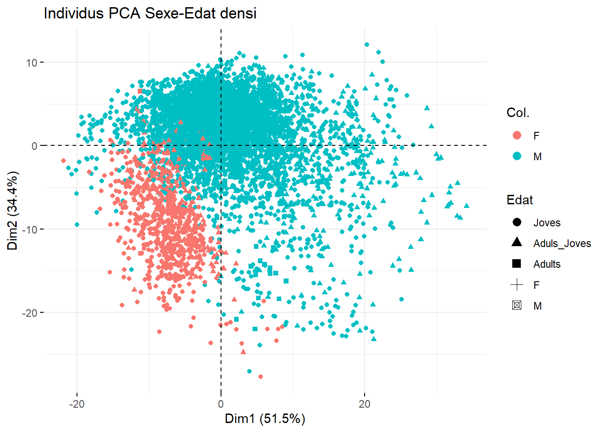
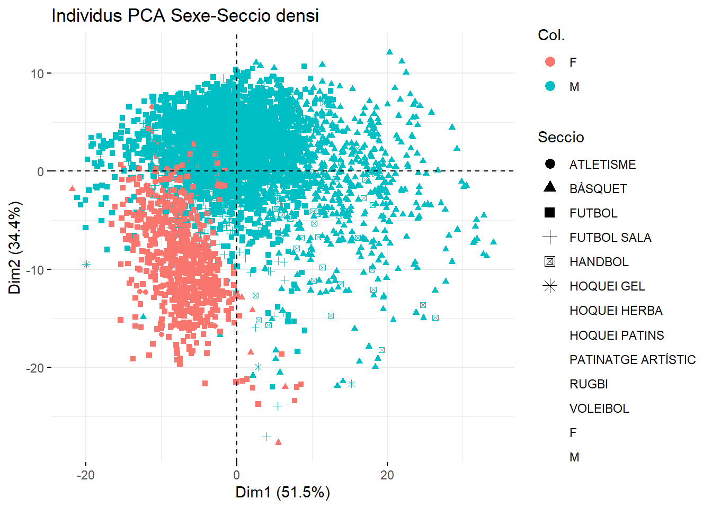
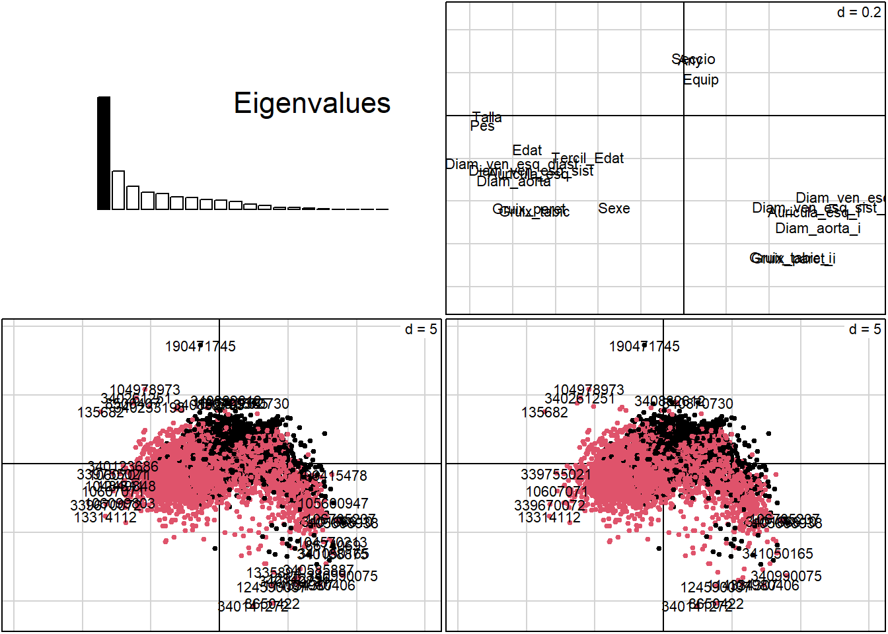

Capítol 2 Outliers
2.1 Densitometria
Comencem previsualitzant un resum d’estadistiques descriptives univariants.
Descriptive Statistics
dfpredensi
N: 6382
Mean Std.Dev Min Median Max N.Valid Pct.Valid
-------------------------------- --------- --------- --------- --------- ---------- --------- -----------
AndroideCMO_g 60.64 14.20 20.30 60.00 393.00 6382.00 100.00
AndroideGrasa_g 546.56 436.15 95.00 432.00 6749.00 6382.00 100.00
AndroideMagro_g 3516.41 630.23 1362.00 3481.00 7453.00 6382.00 100.00
AndroideMasaTotal_kfg 4.12 0.87 1.50 4.00 12.30 6382.00 100.00
AndroideRegión_percentatge 12.62 6.63 4.00 10.90 58.70 6382.00 100.00
AndroideTejido_g 4062.98 859.97 1457.00 3929.50 12233.00 6382.00 100.00Declarem una funció per calcular els valors atípics univariants basada en el rang intercuartil.
IQRrow <- function(multiplier, data, variable) {
# Calcula el primer cuartil
Q1 <- quantile(data[[variable]], 0.25, na.rm = TRUE)
# Calcula el tercer cuartil
Q3 <- quantile(data[[variable]], 0.75, na.rm = TRUE)
# Calcula el rango intercuartílico
IQR_value <- stats::IQR(data[[variable]], na.rm = TRUE)
# Calcula el umbral inferior y superior
lower_threshold <- Q1 - multiplier * IQR_value
upper_threshold <- Q3 + multiplier * IQR_value
# Encuentra las filas con valores atípicos
outliers <- which(data[[variable]] < lower_threshold | data[[variable]] > upper_threshold)
return(outliers)
}Visualitzem els grafics de densitat i boxplots de les variables:
suffixes <- c("Tejido_percentatge", "Región_percentatge", "Tejido_g", "Grasa_g", "Magro_g", "CMO_g", "kfg")
densityplots <- lapply(suffixes, function(suffix) {
data_long <- dfpredensi %>% dplyr::select(ends_with(suffix))%>% gather()
ggplot(data = data_long, aes(x = value)) +
facet_wrap(~ key, scales = "free", ncol = 5) +
geom_density() +
theme(axis.text.x = element_text(angle = 45, size = 7)) +
theme(strip.text.x = element_text(hjust = 0.1, size = 6))
})
boxplotecocardio1<-dfpreeco %>%
keep(is.numeric) %>%
gather() %>%
ggplot(aes(value)) +
facet_wrap(~ key, scales = "free", ncol = 4) +
geom_boxplot() +
theme(axis.text.x = element_text(angle = 40))
boxplots <- lapply(suffixes, function(suffix) {
df.m <- melt(dfpredensi %>% dplyr::select(ends_with(suffix)))
ggplot(data = df.m, aes(y = value)) +
geom_boxplot(dir= "h") +
facet_wrap(~ variable, scales = "free", ncol = 4) +
theme(strip.text.x = element_text(hjust = 0.1, size = 6), strip.text.y = element_text(hjust = 0.1, size = 6))
})
boxplots[[1]]Figure 2.1: boxplot Tejido_percentatge
[[2]]
Figure 2.2: boxplot Región_percentatge
[[3]]
Figure 2.3: boxplot Tejido_g
[[4]]
Figure 2.4: boxplot Grasa_g
[[5]]Figure 2.5: boxplot Magro_g
[[6]]Figure 2.6: boxplot CMO_g
[[7]]Figure 2.7: boxplot kfg
[[1]]Figure 2.8: densitat Tejido_percentatge
[[2]]Figure 2.9: densitat Región_percentatge
[[3]]Figure 2.10: densitat Tejido_g
[[4]]
Figure 2.11: densitat Grasa_g
[[5]]Figure 2.12: densitat Magro_g
[[6]]Figure 2.13: densitat CMO_g
[[7]]Figure 2.14: densitat kfg
Seleccionem les variables numeriques del dataframe per calcular el IQR de cada variable. D’aqeusta manera podem reemplazar els valors atípics univariants per NA’s.
numericdensi <- unlist(names(dfpredensi %>% keep(is.numeric)))
IQRdensi <- map(numericdensi, ~ IQRrow(4, dfpredensi, .x))
names(IQRdensi) <- numericdensi
IQRdensi <- IQRdensi[which(lengths(IQRdensi) > 0)]
for (col in names(IQRdensi)) {
dfpredensi[[col]] <- replace(dfpredensi[[col]],IQRdensi[[col]],NA)
}Utilitzem la distancia Mahalanobis i els p-valors per asegurar-nos que no queden valors atipics multivariants. Finalment tornem a visualitzar els grafics de densitat per comprovar les variables.
df <- dfpredensi %>% keep(is.numeric)
df$mahalnobis<- mahalanobis(df, colMeans(df), cov(df))
df$pvalue <- pchisq(df$mahalnobis, df=3, lower.tail=FALSE)
#In general, a p-value that is less than 0.001 is considered to be an outlier. In this case, all the p values are greater than 0.001
row1 <- which(df$pvalue < 0.001)2.2 Ecocardiograma
Comencem previsualitzant un resum d’estadistiques descriptives univariants.
Descriptive Statistics
dfpreeco
Group: Sexe = F
N: 2121
Mean Std.Dev Min Median Max N.Valid Pct.Valid
------------------------- --------- --------- --------- --------- ---------- --------- -----------
Any 2018.61 2.53 2014.00 2018.00 2023.00 2121.00 100.00
Auricula_esq 30.08 4.47 2.00 30.00 44.00 2087.00 98.40
Auricula_esq_i 20.41 4.77 2.84 19.80 135.32 1538.00 72.51
Diam_aorta 24.86 3.23 2.00 25.00 37.00 2016.00 95.05
Diam_aorta_i 16.89 4.02 0.00 16.37 117.67 1489.00 70.20
Diam_ven_esq_diast 44.90 4.84 4.00 45.00 58.00 2098.00 98.92
Diam_ven_esq_i 30.49 6.85 2.83 29.47 217.69 1537.00 72.47
Diam_ven_esq_sist 27.49 4.04 1.00 27.00 81.00 2079.00 98.02
Diam_ven_esq_sist_i 18.74 4.62 0.89 18.06 129.44 1532.00 72.23
Edat 16.48 6.47 6.28 15.16 56.68 2116.00 99.76
Gruix_paret 7.47 1.52 4.00 7.00 38.00 2084.00 98.26
Gruix_paret_i 5.07 1.31 1.84 4.90 29.42 1539.00 72.56
Gruix_tabic 7.59 1.28 4.00 7.00 25.00 2097.00 98.87
Gruix_tabic_i 5.16 1.20 2.45 5.03 29.42 1537.00 72.47
Pes 56.89 24.34 18.00 55.00 287.00 2023.00 95.38
Talla 163.03 359.02 4.00 162.00 16248.00 2020.00 95.24
Group: Sexe = M
N: 4262
Mean Std.Dev Min Median Max N.Valid Pct.Valid
------------------------- --------- --------- --------- --------- ---------- --------- -----------
Any 2018.50 2.53 2014.00 2019.00 2023.00 4262.00 100.00
Auricula_esq 33.88 5.32 0.00 34.00 51.00 4212.00 98.83
Auricula_esq_i 20.16 5.02 0.00 19.34 163.98 3329.00 78.11
Diam_aorta 28.54 5.99 2.00 29.00 277.00 4108.00 96.39
Diam_aorta_i 16.93 4.78 0.00 16.34 154.87 3244.00 76.11
Diam_ven_esq_diast 50.04 12.25 4.00 50.00 544.00 4229.00 99.23
Diam_ven_esq_i 29.81 9.28 0.00 28.34 264.19 3312.00 77.71
Diam_ven_esq_sist 31.03 6.66 2.00 31.00 320.00 4209.00 98.76
Diam_ven_esq_sist_i 18.45 5.13 0.00 17.82 155.18 3322.00 77.94
Edat 18.80 8.16 4.93 17.10 76.09 4179.00 98.05
Gruix_paret 8.58 2.03 0.00 9.00 89.00 4195.00 98.43
Gruix_paret_i 5.10 1.95 0.00 4.92 87.51 3323.00 77.97
Gruix_tabic 8.81 2.47 0.00 9.00 98.00 4223.00 99.08
Gruix_tabic_i 5.23 1.69 0.00 5.06 48.32 3314.00 77.76
Pes 68.94 29.30 15.00 69.00 789.00 4079.00 95.71
Talla 171.68 282.05 1.68 174.00 18046.00 4074.00 95.59densityplotecocardio1 <- dfpreeco %>%
keep(is.numeric) %>%
gather() %>%
ggplot(aes(value)) +
facet_wrap(~ key, scales = "free", ncol = 4) +
geom_density() +
theme(axis.text.x = element_text(angle = 40))
boxplotecocardio1<-dfpreeco %>%
keep(is.numeric) %>%
gather() %>%
ggplot(aes(value)) +
facet_wrap(~ key, scales = "free", ncol = 4) +
geom_boxplot() +
theme(axis.text.x = element_text(angle = 40))
densityplotecocardio1 Figure 2.15: densitat ecocardiograma
Figure 2.16: boxplot ecocardiograma
En aquesta base de dades analitzarem inicialment les variables dos a dos.
- PES/TALLA Primer corregirem manualment els errors tipogràfics puntuals causats per lingres incorrecte de dades.
dfpreeco <- dfpreeco %>%
mutate(row = row_number())
# mirem els errors on la talla i el pes son menors a 100 les dos.
row <- which(dfpreeco$Talla<100 & dfpreeco$Pes<100)
dfpreeco$Talla[row] <- dfpreeco$Talla[row] + 100
dfpreeco[["Talla"]][81] <- 170
dfpreeco[["Talla"]][849] <- 193
dfpreeco[["Talla"]][2179] <- NA
dfpreeco[["Talla"]][5085] <- 140
dfpreeco[["Talla"]][6100] <- 168
dfpreeco[["Talla"]][4045] <- 190
df <- dfpreeco[which(dfpreeco$Talla>300), ]
dfpreeco[["Talla"]][1817] <- 180.46
dfpreeco[["Talla"]][1910] <- 148
dfpreeco[["Talla"]][2953] <- 176.0
dfpreeco[["Talla"]][3602] <- 177.0
dfpreeco[["Talla"]][5145] <- 194
dfpreeco[["Pes"]][5162] <- 185
dfpreeco[["Pes"]][5390] <- 185
dfpreeco[["Talla"]][2794] <- 137.0
dfpreeco[["Pes"]][2794] <- NA
dfpreeco[["Pes"]][2009] <- NA
dfpreeco[["Talla"]][2794] <- 186.0
dfpreeco[["Talla"]][2009] <- 147.0
dfpreeco[["Talla"]][980] <- 127
dfpreeco[["Pes"]][980] <- NA
dfpreeco[["Pes"]][2761] <- 28.7
dfpreeco[["Pes"]][5270] <- 78.9
dfpreeco[["Talla"]][1977] <- NA Després de la visualització de les dades mitjançant un gràfic de dispersió, s’ha identificat que la majoria dels errors es deuen a una confusió entre les columnes “Talla” i “Pes”. Sembla que s’han intercanviat accidentalment durant el procés d’entrada de dades. Per corretgir-ho utilizem tecniques d’agrupament (clusters).
rowna <- dfpreeco%>% filter(is.na(Pes) | is.na(Talla))
df_nona <- na.omit(dfpreeco[,c("Talla", "Pes", "row")])
dfpreeco_nona <- dfpreeco[dfpreeco$row %in% df_nona$row, ]
set.seed(123)
kmeans =kmeans(dfpreeco_nona[,c("Talla", "Pes")],4 )
fviz_cluster(kmeans,
data = dfpreeco_nona[,c("Talla", "Pes")],
palette = c("#00AFBB", "#E7B800","#A8C100", "red" ),
geom = "point",
ellipse.type = "convex",
ggtheme = theme_bw())
ggplot(dfpreeco, aes(x = dfpreeco$Talla, y = dfpreeco$Pes)) +
geom_point() +
geom_text(label=rownames(dfpreeco))+
stat_smooth(method=lm)
dfpreeco <- dfpreeco_nona %>% filter(kmeans$cluster == 4) %>% mutate(
Pes_aux = Pes,
Pes = Talla,
Talla = Pes_aux,) %>% dplyr::select(-Pes_aux) %>%
rbind(dfpreeco_nona %>% filter(kmeans$cluster != 4)) %>%
rbind(rowna)
ggplot(dfpreeco, aes(x = dfpreeco$Talla, y = dfpreeco$Pes)) +
geom_point() +
geom_text(label=rownames(dfpreeco))+
stat_smooth(method=lm)
- DIÀMETRE VENTRICLE ESQUERRE DIASTÒLIC / SISTÒLIC
El diàmetre del ventricle esquerre en dos moments diferents del cicle cardíac es coneix com a diastòlic i sistòlic. El diàmetre diastòlic es refereix a la grandària del ventricle quan està relaxat, mentre que el diàmetre sistòlic es refereix a la grandària quan està contret.
Els valors normals per al diàmetre del ventricle esquerre varien segons el gènere i l’estat de relaxació o contracció del cor. Per a homes, el diàmetre diastòlic normal és de 48-57 mm, i el diàmetre sistòlic normal és de 28-34 mm. En dones, els valors normals són lleugerament més baixos, amb un diàmetre diastòlic de 44-54 mm i un diàmetre sistòlic de 24-30 mm.
df.m <- melt(dfpreeco %>% dplyr::select(Diam_ven_esq_sist_i,Diam_ven_esq_i, Diam_ven_esq_sist, Diam_ven_esq_diast))
ggplot(data = df.m, aes(y=value)) +
geom_boxplot() + facet_wrap(~variable,ncol = 4)
rowdiast <- IQRrow(1.8, dfpreeco, "Diam_ven_esq_diast")
rowsist<- IQRrow(2.5, dfpreeco, "Diam_ven_esq_sist")
ggplot(dfpreeco, aes(x = Diam_ven_esq_diast, y = Diam_ven_esq_sist)) +
geom_point() +
geom_text(label = rownames(dfpreeco)) +
stat_smooth(method = lm) +
geom_point(data = dfpreeco[rowdiast, ], aes(color = "outliers diast"), size = 3) +
geom_point(data = dfpreeco[rowsist, ], aes(color = "outliers sist"), size = 3) +
scale_color_manual(values = c("outliers diast" = "red", "outliers sist" = "yellow"))
dfpreeco[["Diam_ven_esq_diast"]][rowdiast] <- NA
dfpreeco[["Diam_ven_esq_sist"]][rowsist] <- NA
ggplot(dfpreeco, aes(x = Diam_ven_esq_diast, y = Diam_ven_esq_sist)) +
geom_point() +
geom_text(label = rownames(dfpreeco)) +
stat_smooth(method = lm) 
rownaesq <-which(dfpreeco$Diam_ven_esq_i>100)
rownasist <- c(which(dfpreeco$Diam_ven_esq_sist_i>70), which(dfpreeco$Diam_ven_esq_sist_i<7))
rowdiast <- IQRrow(3, dfpreeco, "Diam_ven_esq_i")
rowsist <- IQRrow(4, dfpreeco, "Diam_ven_esq_sist_i")
ggplot(dfpreeco, aes(x = Diam_ven_esq_i, y = Diam_ven_esq_sist_i)) +
geom_point() +
geom_text(label = rownames(dfpreeco)) +
stat_smooth(method = lm) +
geom_point(data = dfpreeco[rowdiast, ], aes(color = "outliers diast"), size = 3) +
geom_point(data = dfpreeco[rowsist, ], aes(color = "outliers sist"), size = 3) +
geom_point(data = dfpreeco[rownaesq, ], aes(color = "outliers diast"), size = 3) +
geom_point(data = dfpreeco[rownasist, ], aes(color = "outliers sist"), size = 3) +
scale_color_manual(values = c("outliers diast" = "red", "outliers sist" = "yellow", "outliers na diast" = "blue", "outliers na sist" = "blue"))
dfpreeco[["Diam_ven_esq_i"]][rowdiast] <- NA
dfpreeco[["Diam_ven_esq_sist_i"]][rowsist] <- NA
dfpreeco[["Diam_ven_esq_i"]][rownaesq] <- NA
dfpreeco[["Diam_ven_esq_sist_i"]][rownasist] <- NA
ggplot(dfpreeco, aes(x = Diam_ven_esq_i, y = Diam_ven_esq_sist_i)) +
geom_point() +
geom_text(label = rownames(dfpreeco)) +
stat_smooth(method = lm) 
3.GRUIX TABIC/PARET Reptenim el mateix procediment.
df.m <- melt(dfpreeco %>% dplyr::select(Gruix_tabic,Gruix_paret, Gruix_tabic_i, Gruix_paret_i))
ggplot(data = df.m, aes(y=value)) +
geom_boxplot() + facet_wrap(~variable,ncol = 4)
dfpreeco[which(dfpreeco$Gruix_tabic<2),]<- NA
dfpreeco[which(dfpreeco$Gruix_paret<2),]<- NA
rowtabic <- IQRrow(3, dfpreeco, "Gruix_tabic")
rowparet <- IQRrow(2.5, dfpreeco, "Gruix_paret")
ggplot(dfpreeco, aes(x = Gruix_tabic, y = Gruix_paret)) +
geom_point() +
geom_text(label = rownames(dfpreeco)) +
stat_smooth(method = lm) +
geom_point(data = dfpreeco[rowtabic, ], aes(color = "outliers tabic"), size = 3) +
geom_point(data = dfpreeco[rowparet, ], aes(color = "outliers paret"), size = 3) +
scale_color_manual(values = c("outliers tabic" = "red", "outliers paret" = "yellow"))dfpreeco[["Gruix_tabic"]][rowtabic] <- NA
dfpreeco[["Gruix_paret"]][rowparet] <- NA
ggplot(dfpreeco, aes(x = dfpreeco$Gruix_tabic, y = dfpreeco$Gruix_paret)) +
geom_point() +
geom_text(label=rownames(dfpreeco))+
stat_smooth(method=lm)ggplot(dfpreeco, aes(x = dfpreeco$Gruix_tabic_i, y = dfpreeco$Gruix_paret_i)) +
geom_point() +
geom_text(label=rownames(dfpreeco))+
stat_smooth(method=lm)rowtabic <- IQRrow(4.5, dfpreeco, "Gruix_tabic_i")
rowparet <- IQRrow(3, dfpreeco, "Gruix_paret_i")
ggplot(dfpreeco, aes(x = Gruix_tabic_i, y = Gruix_paret_i)) +
geom_point() +
geom_text(label = rownames(dfpreeco)) +
stat_smooth(method = lm) +
geom_point(data = dfpreeco[rowtabic, ], aes(color = "outliers tabic"), size = 3) +
geom_point(data = dfpreeco[rowparet, ], aes(color = "outliers paret"), size = 3) +
scale_color_manual(values = c("outliers tabic" = "red", "outliers paret" = "yellow"))4.AORTA/AURICULA ESQUERRA
df.m <- melt(dfpreeco %>% dplyr::select(Auricula_esq,Diam_aorta, Auricula_esq_i, Diam_aorta_i))
ggplot(data = df.m, aes(y=value)) +
geom_boxplot() + facet_wrap(~variable,ncol = 4)rowauricula <- IQRrow(2.5, dfpreeco, "Auricula_esq")
rowaorta <- IQRrow(2.3, dfpreeco, "Diam_aorta")
ggplot(dfpreeco, aes(x = Auricula_esq, y = Diam_aorta)) +
geom_point() +
geom_text(label = rownames(dfpreeco)) +
stat_smooth(method = lm) +
geom_point(data = dfpreeco[rowauricula, ], aes(color = "outliers auricula"), size = 3) +
geom_point(data = dfpreeco[rowaorta, ], aes(color = "outliers aorta"), size = 3) +
scale_color_manual(values = c("outliers auricula" = "red", "outliers aorta" = "yellow"))dfpreeco[["Auricula_esq"]][rowauricula] <- NA
dfpreeco[["Diam_aorta"]][rowaorta] <- NA
ggplot(dfpreeco, aes(x = dfpreeco$Auricula_esq, y = dfpreeco$Diam_aorta)) +
geom_point() +
geom_text(label=rownames(dfpreeco))+
stat_smooth(method=lm)dfpreeco[["Diam_aorta_i"]][which(dfpreeco$Diam_aorta_i<7)] <- NA
dfpreeco[["Auricula_esq_i"]][which(dfpreeco$Auricula_esq_i<5)] <- NA
rowauricula <- IQRrow(4, dfpreeco, "Auricula_esq_i")
rowaorta <- IQRrow(6, dfpreeco, "Diam_aorta_i")
ggplot(dfpreeco, aes(x = Auricula_esq_i, y = Diam_aorta_i)) +
geom_point() +
geom_text(label = rownames(dfpreeco)) +
stat_smooth(method = lm) +
geom_point(data = dfpreeco[rowauricula, ], aes(color = "outliers auricula"), size = 3) +
geom_point(data = dfpreeco[rowaorta, ], aes(color = "outliers aorta"), size = 3) +
scale_color_manual(values = c("outliers auricula" = "red", "outliers aorta" = "yellow"))